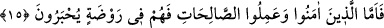

14. Kıyâmet kopacağı gün, işte o gün (müminlerle inkârcılar) birbirlerinden
ayrılacaklardır.
“Kıyâmet kopacağı gün,” Bu ifâde, kıyâmetle korkutmak ve o günde meydana
geleceklerden ürkütmek için tekrar edilmiştir. “İşte o gün” o zaman “(müminlerle
inkârcılar) birbirlerinden ayrılacaklardır.” Bu ifâdeyle ardı ardına kıyâmetle
korkutma vardır. Burada ayrılmanın bazı insanlar arasında olacağına remz vardır.
“Ayrılacaklar” ifâdesi, özel olarak günahkarlar hakkında değil, daha önce ilk
yaratılışları, tekrar yaratılışları ve O’na döndürülmelerinden bahsedilmelerinin delâlet
ettiği üzere bütün mahlûkât hakkındadır.
Mânâ şöyledir: Hesaptan sonra mü’minler ve kâfirler cennete ve cehenneme ayrılırlar,
asla bir araya gelmezler.
Hasan Basrî (r.h.) şöyle demiştir: “Dünyâda beraber bulunmuş idiyseler de kıyâmet
gününde mutlaka ayrılacaklardır. Mü’minler yücelerin yücesinde (a‘lâ-yı ılliyyîn),
kâfirler aşağıların aşağısında (esfel-i sâfilîn) olacaktır. Birisi vuslat mertebesinde,
diğeri firkat derekesinde bulunacaktır. Vuslat mertebesinde olan muhabbet tahtında,
firkat derekesinde olan ise mihnet ve sıkıntı hasırı üzerindedir. Birincisine türlü türlü
sevap, diğerine çeşit çeşit cezâ vardır. Topluluğun biri devlet ve saâdete ermiş, naz ve
nîmet içinde; diğer topluluk ise ayrılık ateşinde erimektedir.
Biri yüzlerce zevk ve safa içinde gülüp eğlenmekte,
Diğeri onca sıkıntı ve meşakkat içinde inlemekte.
Biri vuslatın verdiği rahat ve huzur içinde,
Diğeri hicran ateşinin şiddetinde.
Ebû Bekir b. Tâhir (k.s.) der ki: “Herkes kendisine takdir edilen saâdet mahalline ve
şakâvet menziline ayrılır. Kimin ayrılması/tefrikası cem‘e olursa sırrı toplu olur. Sonra
mahlûkât ile aslâ ülfet etmez ve saîdlerin mahalline döndürülür. Kimin de
ayrılması/tefrikası farka olursa sırrı dağınık olur. Sonra Hak ile aslâ ülfet etmez ve
şakâvet ehlinin mahalline dönüp varır.”
Allah Teâlâ, sonra iki grubun durumlarını ve ayrılmalarının nasıl olduğunu
açıklayarak şöyle buyurdu:
15. Îman edip iyi işler yapanlara gelince onlar, cennette nîmetlere ve sevince
mazhar olacaklardır.
“Îman edip iyi işler yapanlara gelince onlar, cennette nîmetlere” içinde güller ve
ırmaklar olan cennet bahçelerinde “ve sevince mazhar olacaklardır.” Öyle